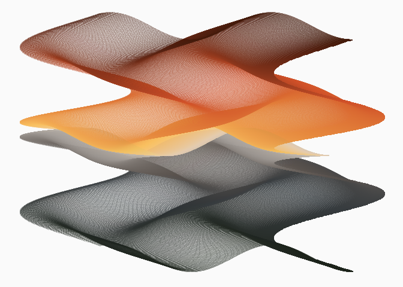
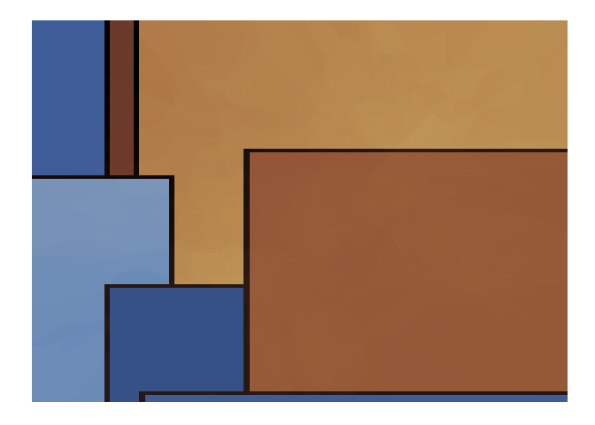
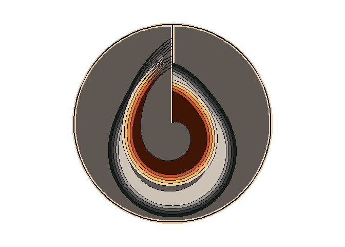

MexBrewer is a package with color palettes inspired by the works of Mexican painters and muralists. This package was motivated and draws heavily from the code of Blake R. Mills’s {MetBrewer}, the package with color palettes form the Metropolitan Museum of Art of New York. The structure of the package and coding, like {MetBrewer}, are based on {PNWColors} and {wesanderson}.
Installation
The package is available from CRAN:
install.packages("MexBrewer")The development version of the package can be installed like so:
if (!require("remotes")) install.packages("remotes")
remotes::install_github("paezha/MexBrewer") Artists


Frida Khalo
La Casa Azul
These palettes are called Casita1, Casita2, and Casita3. They are inspired by the colors of Frida’s home in Coyoacán, Mexico City.

Casa Azul

Casa Azul
Casa Azul

Casa Azul

Casa Azul

Casa Azul
Casita1
Casita2

Casita3


Examples
library(aRtsy) # Koen Derks' package for generative art
library(flametree) # Danielle Navarro's package for generative art
library(MexBrewer)
library(sf)
library(tidyverse)Invoke data sets used in the examples:
data("mx_estados") # Simple features object with the boundaries of states in Mexico
data("df_mxstate_2020") # Data from {mxmaps }with population statistics at the state levelJoin population statistics to state boundaries:
mx_estados <- mx_estados |>
left_join(df_mxstate_2020 |>
#Percentage of population that speak an indigenous language
mutate(pct_ind_lang = indigenous_language/pop * 100) |>
dplyr::transmute(pop2020 = pop,
am2020 = afromexican,
state_name,
pct_ind_lang),
by = c("nombre" = "state_name"))Distribution of population by geographic region in Mexico:
ggplot(data = mx_estados,
aes(x = region, y = pop2020, fill = region)) +
geom_boxplot() +
scale_fill_manual(values = mex.brewer("Concha", n = 5)) +
theme_minimal()
Percentage of population who speak an indigenous language in 2020 by state:
ggplot() +
geom_sf(data = mx_estados,
aes(fill = pct_ind_lang),
color = "white",
size = 0.08) +
scale_fill_gradientn(colors = mex.brewer("Tierra")) +
theme_minimal()
Some Rtistry
Danielle Navarro’s {flametree}
The following three images were created using the {flametree} package.
# pick some colours
shades <- MexBrewer::mex.brewer("Vendedora") |>
as.vector()
# data structure defining the trees
dat <- flametree_grow(seed = 3563,
time = 11,
trees = 10)
# draw the plot
dat |>
flametree_plot(
background = shades[1],
palette = shades[2:length(shades)],
style = "nativeflora"
)
# pick some colours
shades <- MexBrewer::mex.brewer("Concha") |>
as.vector()
# data structure defining the trees
dat <- flametree_grow(seed = 3536,
time = 8,
trees = 6)
# draw the plot
dat |>
flametree_plot(
background = shades[1],
palette = rev(shades[2:length(shades)]),
style = "wisp"
)
# pick some colours
shades <- MexBrewer::mex.brewer("Maiz") |>
as.vector()
# data structure defining the trees
dat <- flametree_grow(seed = 3653,
time = 8,
trees = 6)
# draw the plot
dat |>
flametree_plot(
background = shades[1],
palette = shades[2:length(shades)],
style = "minimal"
)
Koen Derks’s aRtsy
The following three images were created using the {aRtsy} package.
Functions:
my_formula <- list(
x = quote(runif(1, -1, 1) * x_i^2 - sin(y_i^2)),
y = quote(runif(1, -1, 1) * y_i^3 - cos(x_i^2))
)
canvas_function(colors = mex.brewer("Atentado"),
polar = FALSE,
by = 0.005,
formula = my_formula)
Mosaic:
canvas_squares(colors = mex.brewer("Alacena"),
cuts = 20,
ratio = 1.5,
resolution = 200,
noise = TRUE)
Mandelbrot’s set:
canvas_mandelbrot(colors = mex.brewer("Naturaleza"),
zoom = 8,
iterations = 200,
resolution = 500)
Meghan S. Harris’s waves
These plots are adaptations of Meghan Harris’s artsy waves. Create data frames with wave functions:
##Set up the "range" on the x axis for horizontal waves=====
wave_theta <- seq(from = -pi,
to = -0,
by = 0.01)
# Create waves using functions
wave_1 <- data.frame(x = wave_theta) |>
mutate(y = (sin(x) * cos(2 * wave_theta) + exp(x * 2)))
wave_2 <- data.frame(x = wave_theta) |>
mutate(y = (0.5 * sin(x) * cos(2.0 * wave_theta) + exp(x)) - 0.5)Define a function to convert a single wave into a set of n waves. The function takes a data frame with a wave function and returns a data frame with n waves:
# Creating a function for iterations====
wave_maker <- function(wave_df, n, shift){
#Create an empty list to store our multiple dataframes(waves)#
wave_list<- list()
#Create a for loop to iteratively make "n" waves shifted a distance `shift` from each other #
for(i in seq_along(1:n)){
wave_list[[i]] <- wave_df |>
mutate(y = y - (shift * i),
group = i)
}
#return the completed data frame to the environment#
return(bind_rows(wave_list))
}Create layered waves using the data frames with the wave functions above:
wave_layers <- rbind(wave_1 |>
wave_maker(n = 5,
shift = 0.075),
wave_2 |>
wave_maker(n = 5,
shift = 0.075) |>
mutate(group = group + 5)) # adjust the group counter to identify waves uniquelyPlot layered waves using cartesian coordinates and palette Ofrenda:
ggplot(wave_layers) +
geom_rect(aes(xmin = -pi,
xmax = -0.0,
ymin = min(y) - 0.50,
ymax = max(y) + 0.30 ),
size = 2.5,
color = mex.brewer("Ofrenda")[6],
fill = mex.brewer("Ofrenda")[4]) +
geom_rect(aes(xmin = -pi,
xmax = -0.0,
ymin = min(y) - 0.50,
ymax = max(y) + 0.30 ),
size = 1,
color = "black",
fill = NA) +
geom_ribbon(aes(x,
ymin = y - 0.025 * 4 * x,
ymax = y + 0.015 * 10 * x,
group = group,
fill = group),
color = "black",
size = 0.5) +
scale_fill_gradientn(colors = mex.brewer("Ofrenda"))+
theme_void() +
theme(legend.position = "none")Plot layered waves using polar coordinates and palette Atentado:
ggplot(wave_layers) +
geom_rect(aes(xmin = -pi,
xmax = -0.0,
ymin = min(y) - 0.45,
ymax = max(y) + 0.30 ),
size = 2.5,
color = mex.brewer("Atentado")[6],
fill = mex.brewer("Atentado")[3]) +
geom_rect(aes(xmin = -pi,
xmax = -0.0,
ymin = min(y) - 0.45,
ymax = max(y) + 0.30 ),
size = 1,
color = "black",
fill = NA) +
geom_ribbon(aes(x,
ymin = y - 0.025 * 4 * x,
ymax = y + 0.015 * 10 * x,
group = group,
fill = group),
color = "black",
size = 0.5) +
scale_fill_gradientn(colors = mex.brewer("Atentado")) +
coord_polar(theta = "x",
start = 0,
direction = 1,
clip = "on") +
theme_void() +
theme(legend.position = "none")